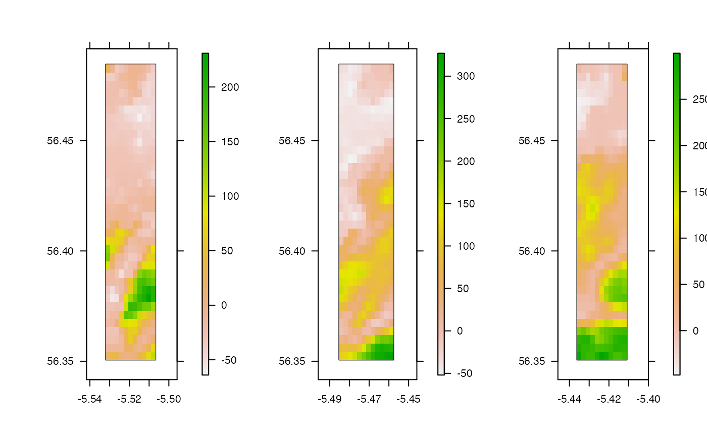

This function splits a raster object into parts with approximately equal area.
split_raster_equally(r, n)
| r | A |
|---|---|
| n | An integer that defines the number of parts into which to split the raster. |
The function taken and slightly modified from the `greenbrown' package (see https://rdrr.io/rforge/greenbrown/src/R/SplitRasterEqually.R). The function is defined separately in flapper to reduce reliance on non-default packages.
The function returns a list containing the split raster components.
The raster (r) should not only contain NAs.
This function requires the `plyr' package.
Forkel M, Wutzler T (2015) greenbrown -- land surface phenology and trend analysis. A package for the R software. Version 2.2, 2015-04-15, http://greenbrown.r-forge.r-project.org/.
l <- split_raster_equally(dat_gebco, 2) l <- split_raster_equally(dat_gebco, 3) pp <- graphics::par(mfrow = c(1, 3)) lapply(l, function(r) prettyGraphics::pretty_map(add_rasters = list(x = r)))#>#>#>#> [[1]] #> [[1]]$`1` #> [[1]]$`1`$axis #> [[1]]$`1`$axis$at #> [1] 698000 700000 702000 704000 #> #> [[1]]$`1`$axis$labels #> expression("698000", "700000", "702000", "704000") #> #> [[1]]$`1`$axis$side #> [1] 1 #> #> [[1]]$`1`$axis$las #> [1] TRUE #> #> [[1]]$`1`$axis$pos #> [1] 6246657 #> #> #> [[1]]$`1`$lim #> [1] 697548.1 705772.1 #> attr(,"user") #> [1] TRUE TRUE #> #> #> [[1]]$`2` #> [[1]]$`2`$axis #> [[1]]$`2`$axis$at #> [1] 6250000 6255000 6260000 6265000 6270000 #> #> [[1]]$`2`$axis$labels #> expression("6250000", "6255000", "6260000", "6265000", "6270000") #> #> [[1]]$`2`$axis$side #> [1] 2 #> #> [[1]]$`2`$axis$las #> [1] TRUE #> #> [[1]]$`2`$axis$pos #> [1] 697548.1 #> #> #> [[1]]$`2`$lim #> [1] 6246657 6273048 #> attr(,"user") #> [1] TRUE TRUE #> #> #> [[1]]$`3` #> [[1]]$`3`$axis #> [[1]]$`3`$axis$labels #> [1] FALSE #> #> [[1]]$`3`$axis$at #> [1] 698000 700000 702000 704000 #> #> [[1]]$`3`$axis$side #> [1] 3 #> #> [[1]]$`3`$axis$las #> [1] TRUE #> #> [[1]]$`3`$axis$pos #> [1] 6273048 #> #> #> [[1]]$`3`$lim #> [1] 697548.1 705772.1 #> attr(,"user") #> [1] TRUE TRUE #> #> #> [[1]]$`4` #> [[1]]$`4`$axis #> [[1]]$`4`$axis$labels #> [1] FALSE #> #> [[1]]$`4`$axis$at #> [1] 6250000 6255000 6260000 6265000 6270000 #> #> [[1]]$`4`$axis$side #> [1] 4 #> #> [[1]]$`4`$axis$las #> [1] TRUE #> #> [[1]]$`4`$axis$pos #> [1] 705772.1 #> #> #> [[1]]$`4`$lim #> [1] 6246657 6273048 #> attr(,"user") #> [1] TRUE TRUE #> #> #> #> [[2]] #> [[2]]$`1` #> [[2]]$`1`$axis #> [[2]]$`1`$axis$at #> [1] 706000 706500 707000 707500 708000 708500 #> #> [[2]]$`1`$axis$labels #> expression("706000", "706500", "707000", "707500", "708000", #> "708500") #> #> [[2]]$`1`$axis$side #> [1] 1 #> #> [[2]]$`1`$axis$las #> [1] TRUE #> #> [[2]]$`1`$axis$pos #> [1] 6246657 #> #> #> [[2]]$`1`$lim #> [1] 705772.1 708856.1 #> attr(,"user") #> [1] TRUE TRUE #> #> #> [[2]]$`2` #> [[2]]$`2`$axis #> [[2]]$`2`$axis$at #> [1] 6250000 6255000 6260000 6265000 6270000 #> #> [[2]]$`2`$axis$labels #> expression("6250000", "6255000", "6260000", "6265000", "6270000") #> #> [[2]]$`2`$axis$side #> [1] 2 #> #> [[2]]$`2`$axis$las #> [1] TRUE #> #> [[2]]$`2`$axis$pos #> [1] 705772.1 #> #> #> [[2]]$`2`$lim #> [1] 6246657 6273048 #> attr(,"user") #> [1] TRUE TRUE #> #> #> [[2]]$`3` #> [[2]]$`3`$axis #> [[2]]$`3`$axis$labels #> [1] FALSE #> #> [[2]]$`3`$axis$at #> [1] 706000 706500 707000 707500 708000 708500 #> #> [[2]]$`3`$axis$side #> [1] 3 #> #> [[2]]$`3`$axis$las #> [1] TRUE #> #> [[2]]$`3`$axis$pos #> [1] 6273048 #> #> #> [[2]]$`3`$lim #> [1] 705772.1 708856.1 #> attr(,"user") #> [1] TRUE TRUE #> #> #> [[2]]$`4` #> [[2]]$`4`$axis #> [[2]]$`4`$axis$labels #> [1] FALSE #> #> [[2]]$`4`$axis$at #> [1] 6250000 6255000 6260000 6265000 6270000 #> #> [[2]]$`4`$axis$side #> [1] 4 #> #> [[2]]$`4`$axis$las #> [1] TRUE #> #> [[2]]$`4`$axis$pos #> [1] 708856.1 #> #> #> [[2]]$`4`$lim #> [1] 6246657 6273048 #> attr(,"user") #> [1] TRUE TRUE #> #> #> #> [[3]] #> [[3]]$`1` #> [[3]]$`1`$axis #> [[3]]$`1`$axis$at #> [1] 709000 710000 711000 712000 #> #> [[3]]$`1`$axis$labels #> expression("709000", "710000", "711000", "712000") #> #> [[3]]$`1`$axis$side #> [1] 1 #> #> [[3]]$`1`$axis$las #> [1] TRUE #> #> [[3]]$`1`$axis$pos #> [1] 6246657 #> #> #> [[3]]$`1`$lim #> [1] 708856.1 712454.1 #> attr(,"user") #> [1] TRUE TRUE #> #> #> [[3]]$`2` #> [[3]]$`2`$axis #> [[3]]$`2`$axis$at #> [1] 6250000 6255000 6260000 6265000 6270000 #> #> [[3]]$`2`$axis$labels #> expression("6250000", "6255000", "6260000", "6265000", "6270000") #> #> [[3]]$`2`$axis$side #> [1] 2 #> #> [[3]]$`2`$axis$las #> [1] TRUE #> #> [[3]]$`2`$axis$pos #> [1] 708856.1 #> #> #> [[3]]$`2`$lim #> [1] 6246657 6273048 #> attr(,"user") #> [1] TRUE TRUE #> #> #> [[3]]$`3` #> [[3]]$`3`$axis #> [[3]]$`3`$axis$labels #> [1] FALSE #> #> [[3]]$`3`$axis$at #> [1] 709000 710000 711000 712000 #> #> [[3]]$`3`$axis$side #> [1] 3 #> #> [[3]]$`3`$axis$las #> [1] TRUE #> #> [[3]]$`3`$axis$pos #> [1] 6273048 #> #> #> [[3]]$`3`$lim #> [1] 708856.1 712454.1 #> attr(,"user") #> [1] TRUE TRUE #> #> #> [[3]]$`4` #> [[3]]$`4`$axis #> [[3]]$`4`$axis$labels #> [1] FALSE #> #> [[3]]$`4`$axis$at #> [1] 6250000 6255000 6260000 6265000 6270000 #> #> [[3]]$`4`$axis$side #> [1] 4 #> #> [[3]]$`4`$axis$las #> [1] TRUE #> #> [[3]]$`4`$axis$pos #> [1] 712454.1 #> #> #> [[3]]$`4`$lim #> [1] 6246657 6273048 #> attr(,"user") #> [1] TRUE TRUE #> #> #>